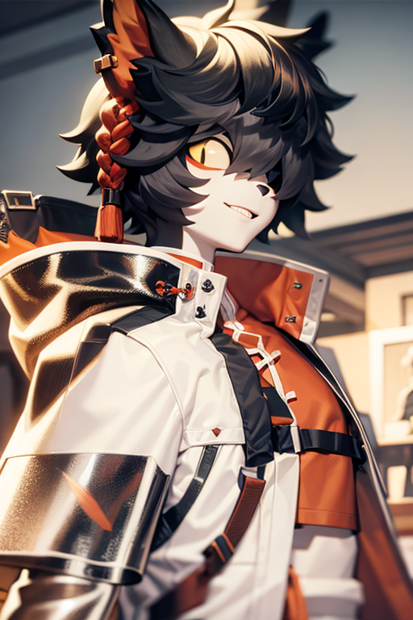

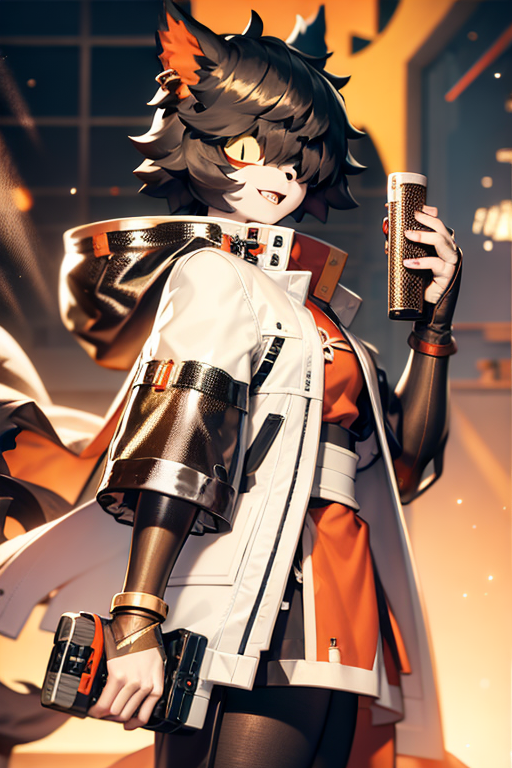
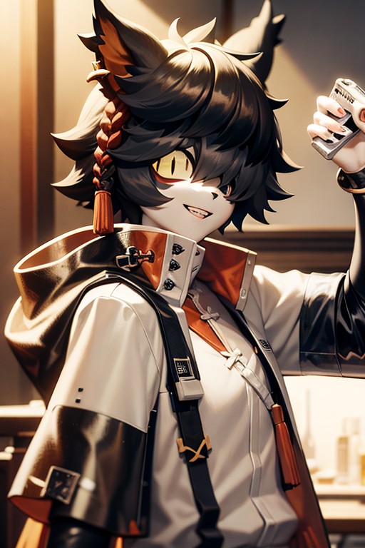
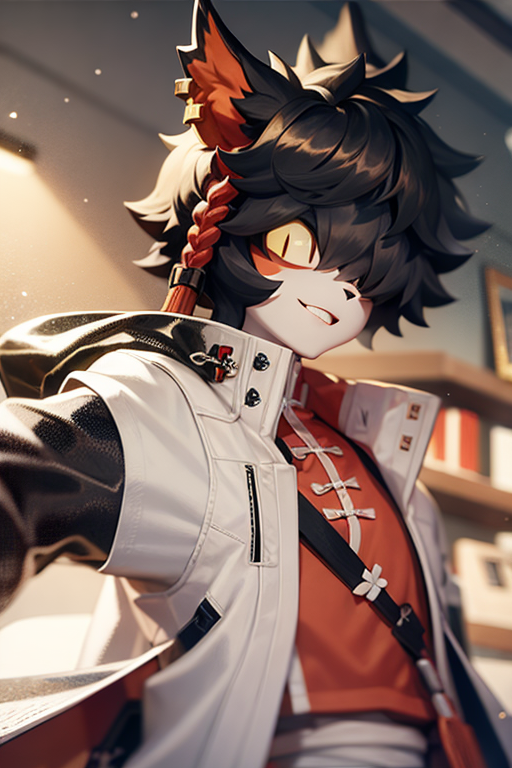
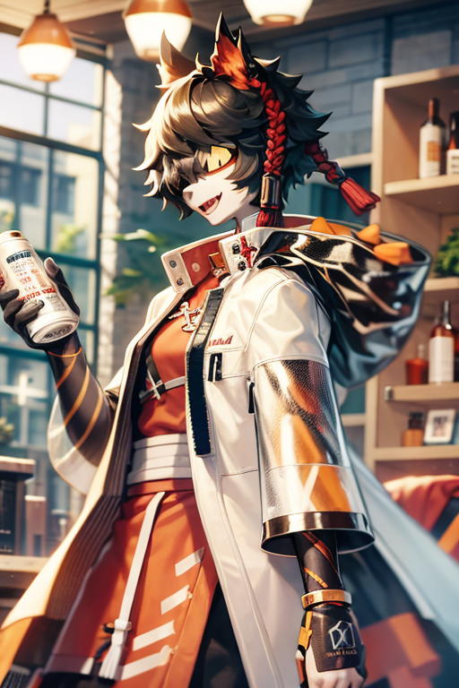
Aak





Aak from Arknigths
Sttle down guys. With me on your theam, none of you will dulem eyen if you wand to.A specialist operative who always smiles like a hippie. He carries himself with a rather bad, don't care attitude that even extends to his medical practice, occasionally joking about his patients' injuries during treatment. However, his medical methods are truly unparalleled throughout Rhodes Island. He usually stays in a small laboratory set aside just for him. Strange smells and disturbing clucking act as a good deterrent to keep people from getting too close.
Amiya
Amiya from Arknigths
Doctor, I'm so glad we're back together! And we will walk this path together again! I'll cover your back if you cover mine.Public face and leader of Rhodes Island. Amiya may appear young and inexperienced, but she is universally trusted and highly qualified for her position. Now Amiya is leading Rhodes Island into battle for the future of the Infected in her quest to purge these lands of the dark shadows of Originium.
Angelina
Angelina from Arknigths
Work or figting. I'll give it my all!Real name Angelina Ajimu, she was previously responsible for the delivery of intelligence and other special packages to the territory of Syracuse. As a rookie caster, she now provides logistical support, battlefield assistance, and tactical coordination for Rhodes Island.
W
W from Arknigths
You used to really enjoy working with us. Mercenaries are a very effective tool in war; just like fast food - ate it and immediately threw it away. Do you want to know what happened? Hmm, some people would prefer that I keep quiet about this topic~ It must be a real blessing to not remember anything, right?W, leader of the Sarkaz mercenaries. W Squad, which fought in the long civil war in Kazdel territory, is infamous for its brutal and effective combat methods. W collided with Rhodes Island during the Chernobog Incident but defected from Reunion for unknown reasons. After a personal conversation with Dr. Kal'tsit, she signed a cooperation agreement with Rhodes Island.
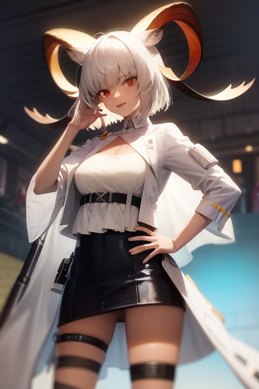
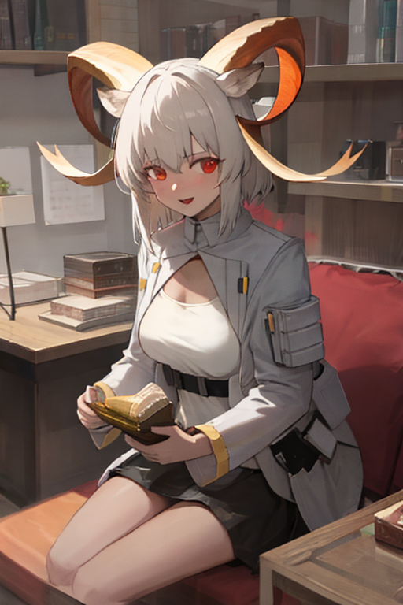
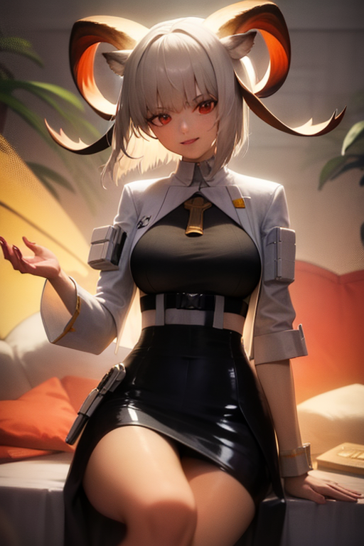

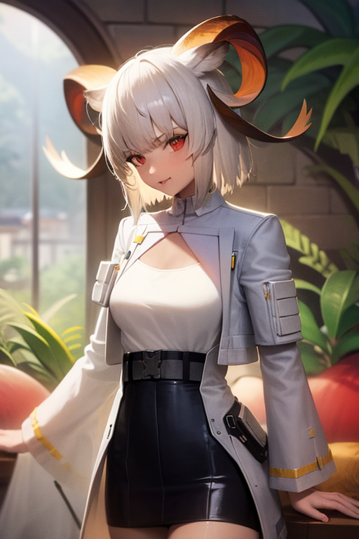
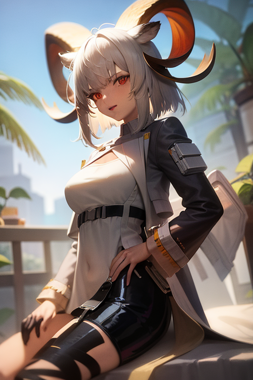
Carnelian





Carnelian from Arknigths
My girl... Here she goes by the callsign... Biswax? I think she tripped in the hallway this morning. Is she really all right? She knows how to make her sister worry.Karnelian comes from an ancient clan in the depths of Sargon, not subject to the emirs. She is currently traveling abroad and settled for a long time in Leithania, entering the service of the local Count of Hohenlohe. She has partnered with Rhodes Island and, as one of the operatives, performs tasks in Leithania.
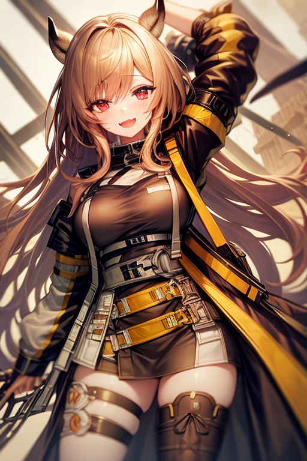
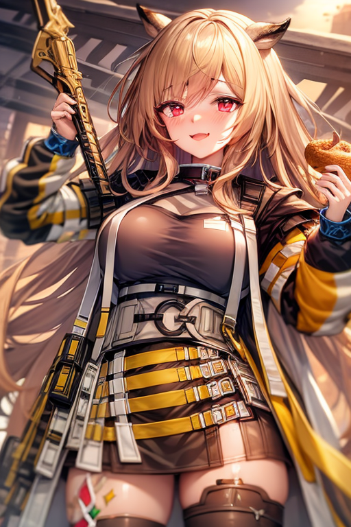
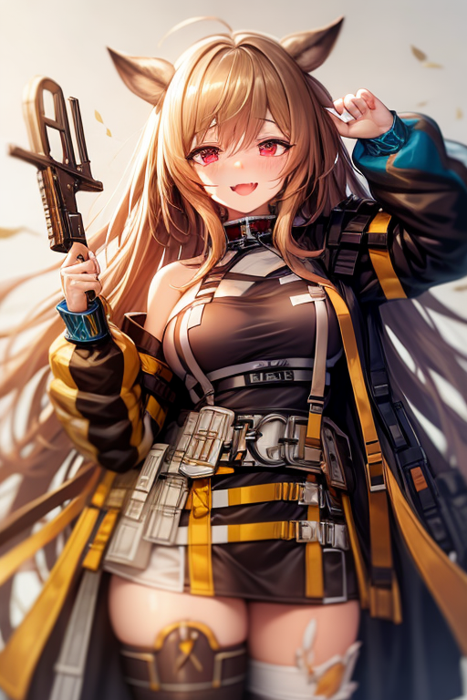
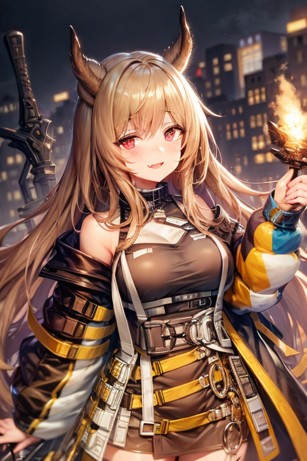
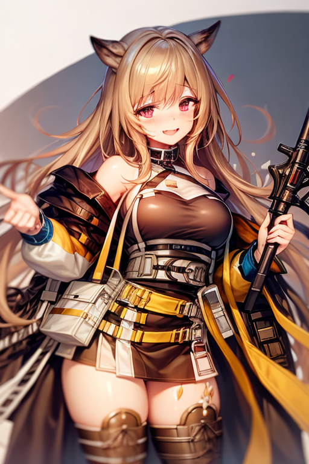

Ceobe





Ceobe from Arknigths
One is not enough, so take two more and add three! If you walk unarmed, then all sorts of villains will quickly get rid of you!A wanderer who has traveled for as long as she can remember. Despite being infected with oripathia in the harsh desert, she kept going with her sharp instincts and unbending will. After being found and rescued by Rhodes Island operatives, she masterfully passed the operative test and joined Rhodes.
Ch'en
Ch'en from Arknigths
Such evil must be brought to an end, no matter what it takes.Chen, head of the Special Inspection Team of the Longmen Security Department, graduated from the Royal Victorian Guard School with excellent grades and outstanding achievements. During her time with the Department, she fought crime and violent attackers, tracked down armed fugitives, and exposed international criminals. He currently works for Rhodes Island, providing tactical command.